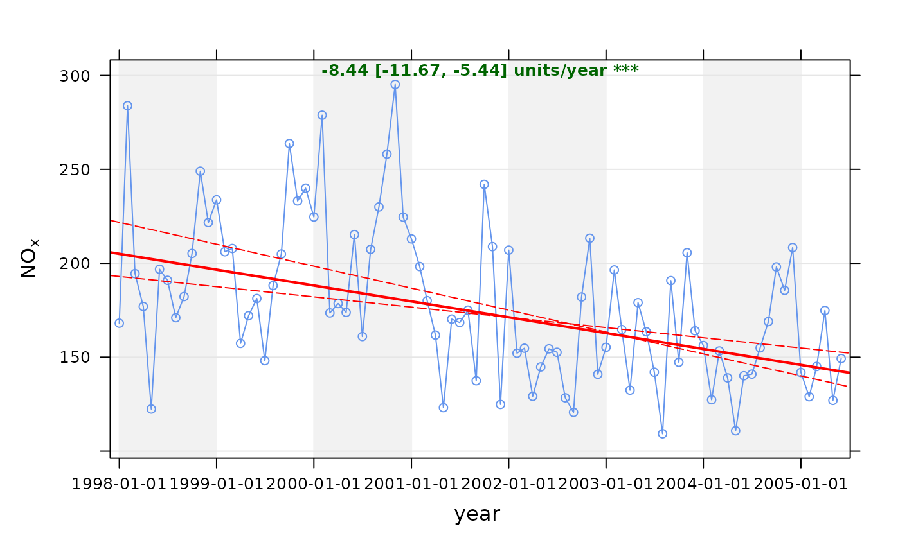

Theil-Sen slope estimates and tests for trend.
Usage
TheilSen(
mydata,
pollutant = "nox",
deseason = FALSE,
type = "default",
avg.time = "month",
statistic = "mean",
percentile = NA,
data.thresh = 0,
alpha = 0.05,
dec.place = 2,
xlab = "year",
lab.frac = 0.99,
lab.cex = 0.8,
x.relation = "same",
y.relation = "same",
data.col = "cornflowerblue",
trend = list(lty = c(1, 5), lwd = c(2, 1), col = c("red", "red")),
text.col = "darkgreen",
slope.text = NULL,
cols = NULL,
shade = "grey95",
auto.text = TRUE,
autocor = FALSE,
slope.percent = FALSE,
date.breaks = 7,
date.format = NULL,
plot = TRUE,
silent = FALSE,
...
)Arguments
- mydata
A data frame containing the field
dateand at least one other parameter for which a trend test is required; typically (but not necessarily) a pollutant.- pollutant
The parameter for which a trend test is required. Mandatory.
- deseason
Should the data be de-deasonalized first? If
TRUEthe functionstlis used (seasonal trend decomposition using loess). Note that ifTRUEmissing data are first imputed using a Kalman filter and Kalman smooth.- type
typedetermines how the data are split i.e. conditioned, and then plotted. The default is will produce a single plot using the entire data. Type can be one of the built-in types as detailed incutDatae.g. “season”, “year”, “weekday” and so on. For example,type = "season"will produce four plots --- one for each season.It is also possible to choose
typeas another variable in the data frame. If that variable is numeric, then the data will be split into four quantiles (if possible) and labelled accordingly. If type is an existing character or factor variable, then those categories/levels will be used directly. This offers great flexibility for understanding the variation of different variables and how they depend on one another.Type can be up length two e.g.
type = c("season", "weekday")will produce a 2x2 plot split by season and day of the week. Note, when two types are provided the first forms the columns and the second the rows.- avg.time
Can be “month” (the default), “season” or “year”. Determines the time over which data should be averaged. Note that for “year”, six or more years are required. For “season” the data are split up into spring: March, April, May etc. Note that December is considered as belonging to winter of the following year.
- statistic
Statistic used for calculating monthly values. Default is “mean”, but can also be “percentile”. See
timeAveragefor more details.- percentile
Single percentile value to use if
statistic = "percentile"is chosen.- data.thresh
The data capture threshold to use (%) when aggregating the data using
avg.time. A value of zero means that all available data will be used in a particular period regardless if of the number of values available. Conversely, a value of 100 will mean that all data will need to be present for the average to be calculated, else it is recorded asNA.- alpha
For the confidence interval calculations of the slope. The default is 0.05. To show 99\ trend, choose alpha = 0.01 etc.
- dec.place
The number of decimal places to display the trend estimate at. The default is 2.
- xlab
x-axis label, by default
"year".- lab.frac
Fraction along the y-axis that the trend information should be printed at, default 0.99.
- lab.cex
Size of text for trend information.
- x.relation
This determines how the x-axis scale is plotted. “same” ensures all panels use the same scale and “free” will use panel-specific scales. The latter is a useful setting when plotting data with very different values.
- y.relation
This determines how the y-axis scale is plotted. “same” ensures all panels use the same scale and “free” will use panel-specific scales. The latter is a useful setting when plotting data with very different values.
- data.col
Colour name for the data
- trend
list containing information on the line width, line type and line colour for the main trend line and confidence intervals respectively.
- text.col
Colour name for the slope/uncertainty numeric estimates
- slope.text
The text shown for the slope (default is ‘units/year’).
- cols
Predefined colour scheme, currently only enabled for
"greyscale".- shade
The colour used for marking alternate years. Use “white” or “transparent” to remove shading.
- auto.text
Either
TRUE(default) orFALSE. IfTRUEtitles and axis labels will automatically try and format pollutant names and units properly e.g. by subscripting the ‘2’ in NO2.- autocor
Should autocorrelation be considered in the trend uncertainty estimates? The default is
FALSE. Generally, accounting for autocorrelation increases the uncertainty of the trend estimate --- sometimes by a large amount.- slope.percent
Should the slope and the slope uncertainties be expressed as a percentage change per year? The default is
FALSEand the slope is expressed as an average units/year change e.g. ppb. Percentage changes can often be confusing and should be clearly defined. Here the percentage change is expressed as 100 * (C.end/C.start - 1) / (end.year - start.year). Where C.start is the concentration at the start date and C.end is the concentration at the end date.For
avg.time = "year"(end.year - start.year) will be the total number of years - 1. For example, given a concentration in year 1 of 100 units and a percentage reduction of 5%/yr, after 5 years there will be 75 units but the actual time span will be 6 years i.e. year 1 is used as a reference year. Things are slightly different for monthly values e.g.avg.time = "month", which will use the total number of months as a basis of the time span and is therefore able to deal with partial years. There can be slight differences in the %/yr trend estimate therefore, depending on whether monthly or annual values are considered.- date.breaks
Number of major x-axis intervals to use. The function will try and choose a sensible number of dates/times as well as formatting the date/time appropriately to the range being considered. This does not always work as desired automatically. The user can therefore increase or decrease the number of intervals by adjusting the value of
date.breaksup or down.- date.format
This option controls the date format on the x-axis. While
TheilSengenerally sets the date format sensibly there can be some situations where the user wishes to have more control. For format types seestrptime. For example, to format the date like “Jan-2012” setdate.format = "%b-%Y".- plot
Should a plot be produced?
FALSEcan be useful when analysing data to extract trend components and plotting them in other ways.- silent
When
FALSEthe function will give updates on trend-fitting progress.- ...
Other graphical parameters passed onto
cutDataandlattice:xyplot. For example,TheilSenpasses the optionhemisphere = "southern"on tocutDatato provide southern (rather than default northern) hemisphere handling oftype = "season". Similarly, common axis and title labelling options (such asxlab,ylab,main) are passed toxyplotviaquickTextto handle routine formatting.
Value
an openair object. The data component of the
TheilSen output includes two subsets: main.data, the monthly
data res2 the trend statistics. For output <- TheilSen(mydata,
"nox"), these can be extracted as object$data$main.data and
object$data$res2, respectively. Note: In the case of the intercept,
it is assumed the y-axis crosses the x-axis on 1/1/1970.
Details
The TheilSen function provides a collection of functions to
analyse trends in air pollution data. The TheilSen function
is flexible in the sense that it can be applied to data in many
ways e.g. by day of the week, hour of day and wind direction. This
flexibility makes it much easier to draw inferences from data
e.g. why is there a strong downward trend in concentration from
one wind sector and not another, or why trends on one day of the
week or a certain time of day are unexpected.
For data that are strongly seasonal, perhaps from a background
site, or a pollutant such as ozone, it will be important to
deseasonalise the data (using the option deseason =
TRUE.Similarly, for data that increase, then decrease, or show
sharp changes it may be better to use smoothTrend.
A minimum of 6 points are required for trend estimates to be made.
Note! that since version 0.5-11 openair uses Theil-Sen to derive the p values also for the slope. This is to ensure there is consistency between the calculated p value and other trend parameters i.e. slope estimates and uncertainties. The p value and all uncertainties are calculated through bootstrap simulations.
Note that the symbols shown next to each trend estimate relate to how statistically significant the trend estimate is: p $<$ 0.001 = ***, p $<$ 0.01 = **, p $<$ 0.05 = * and p $<$ 0.1 = $+$.
Some of the code used in TheilSen is based on that from
Rand Wilcox. This mostly
relates to the Theil-Sen slope estimates and uncertainties.
Further modifications have been made to take account of correlated
data based on Kunsch (1989). The basic function has been adapted
to take account of auto-correlated data using block bootstrap
simulations if autocor = TRUE (Kunsch, 1989). We follow the
suggestion of Kunsch (1989) of setting the block length to n(1/3)
where n is the length of the time series.
The slope estimate and confidence intervals in the slope are plotted and numerical information presented.
References
Helsel, D., Hirsch, R., 2002. Statistical methods in water resources. US Geological Survey. Note that this is a very good resource for statistics as applied to environmental data.
Hirsch, R. M., Slack, J. R., Smith, R. A., 1982. Techniques of trend analysis for monthly water-quality data. Water Resources Research 18 (1), 107-121.
Kunsch, H. R., 1989. The jackknife and the bootstrap for general stationary observations. Annals of Statistics 17 (3), 1217-1241.
Sen, P. K., 1968. Estimates of regression coefficient based on Kendall's tau. Journal of the American Statistical Association 63(324).
Theil, H., 1950. A rank invariant method of linear and polynomial regression analysis, i, ii, iii. Proceedings of the Koninklijke Nederlandse Akademie Wetenschappen, Series A - Mathematical Sciences 53, 386-392, 521-525, 1397-1412.
... see also several of the Air Quality Expert Group (AQEG) reports for the use of similar tests applied to UK/European air quality data.
See also
Other time series and trend functions:
calendarPlot(),
smoothTrend(),
timePlot(),
timeProp(),
timeVariation(),
trendLevel()
Examples
# trend plot for nox
TheilSen(mydata, pollutant = "nox")
#> Taking bootstrap samples. Please wait.

# trend plot for ozone with p=0.01 i.e. uncertainty in slope shown at
# 99 % confidence interval
if (FALSE) TheilSen(mydata, pollutant = "o3", ylab = "o3 (ppb)", alpha = 0.01)
# trend plot by each of 8 wind sectors
if (FALSE) TheilSen(mydata, pollutant = "o3", type = "wd", ylab = "o3 (ppb)")
# and for a subset of data (from year 2000 onwards)
if (FALSE) TheilSen(selectByDate(mydata, year = 2000:2005), pollutant = "o3", ylab = "o3 (ppb)")